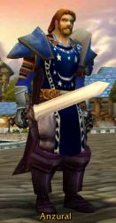

Anzural
Age : 40
Sexe : Homme
Race : Humain
Faction : Alliance
Formation : Paladin
Description : Orphelin a l'age de 4 ans, je fut élévé avec ma soeur de deux ans plus jeune a l'orphelina de Stormwind. Je passais des heures a jouer sur le parvis de la cathédrale avec mes amis. Voyant les Paladins entrer et sortir de ce gigantesque lieu je revais de devenir l'un d'eux. Mais un jour lors d'une ballade dans la foret d'Elwynn avec les autres filles, ma soeur disparu. Je n'eu plus jamais de nouvelles d'elle, est-elle morte ou encore en vie je n'en sais rien mais j'ai juré de devenir Paladin et de me battre pour elle et pour la paix du royaume des Hommes...
Plus d'infos sur Anzural >>>